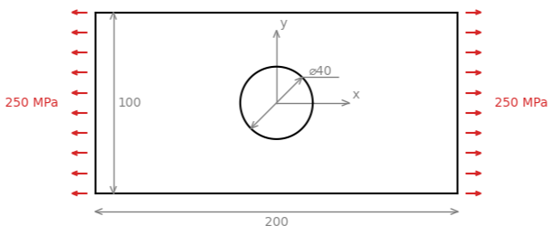
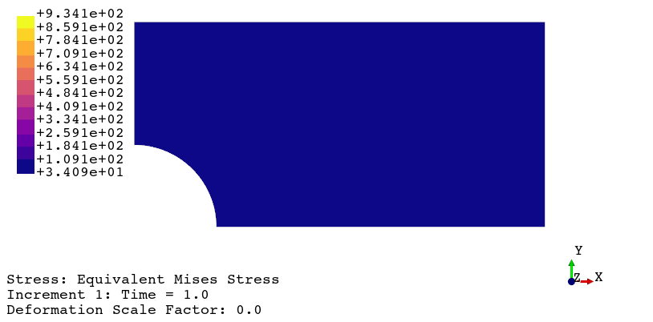
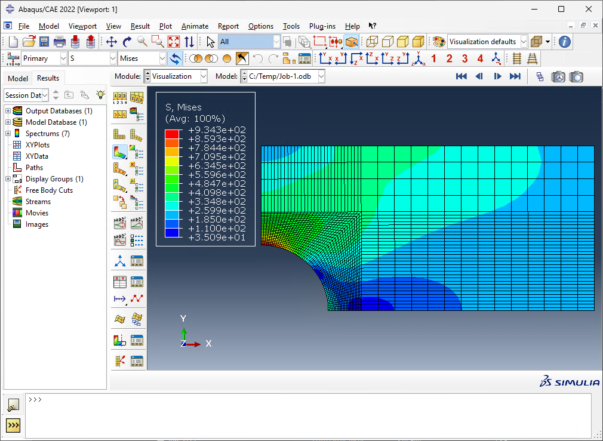

FEAPACK Examples
Basic example #2: Plate with a central hole.
Consider the following plate with a central hole:
The geometry of the plate is defined by a length of 200 mm, a width of 100 mm, and a thickness of 10 mm. The central hole is defined by a diameter of 40 mm. The plate is made of aluminum, which is considered elastic, homogeneous, and isotropic. The material is defined by a Young's modulus of 70 GPa and a Poisson's ration of 0.3. The applied tension has a magnitude of 250 MPa. The objective is to perform a static analysis in order to determine the stress concentration at the hole vicinity. A plane stress condition is assumed. Note: due to the plate symmetry, only 1/4 of the geometry needs to be modelled.
Consistent units: below, the geometry will be defined in mm, whereas the Young's modulus and applied tension are defined in MPa. Consequently, results are computed in N (forces), mm (displacements), mm/mm (strains), and MPa (stresses).
The FEAPACK files for this example can be found here.
Solution via FEAPACK:
Start by creating a job script named basic2.py and import the modules shown below. In this example, we will run the solver in parallel mode. For multiprocessing, the main guard is required:
import feapack.model
import feapack.solver
# main guard required for multiprocessing
if __name__ == '__main__':
For this example, a finite element mesh has been prepared in basic2.inp:
Inside the main guard of the job script, the following loads this mesh into a new model database (MDB):
# create model database (MDB)
mdb = feapack.model.MDB.fromFile('basic2.inp')
The basic2.inp defines 2,017 nodes and 1,916 CPS4 elements. The supported Abaqus element types are automatically converted into the comparable FEAPACK element types (in this case, the CPS4 elements are converted into Plane4 elements). Additionally, Abaqus stores the element connectivity using 1-based indexing, which is automatically converted into 0-based indexing, as required by FEAPACK.
Next, the following sets are created:
# create node sets
mdb.nodeSet(name='nodes at x=0', indices=(node.index for node in mdb.mesh.nodes if node.x == 0.0))
mdb.nodeSet(name='nodes at y=0', indices=(node.index for node in mdb.mesh.nodes if node.y == 0.0))
mdb.nodeSet(name='nodes at x=100', indices=(node.index for node in mdb.mesh.nodes if node.x == 100.0))
# create element set
mdb.elementSet(name='all elements', indices=range(mdb.mesh.elementCount))
# create surface set
mdb.surfaceSet(name='loaded surface', surfaceNodes='nodes at x=100')
The node sets 'nodes at x=0' and 'nodes at y=0' are used below to apply the boundary conditions arising from the symmetries along the x and y axes, respectively. The node set 'nodes at x=100' is used to create the surface set 'loaded surface'. The element set 'all elements' contains all elements and is used for the section assignments. Finally, the surface set 'loaded surface' contains all element surfaces that form the loaded surface of the plate, and this set is used for the load application.
The next step is to define the material and section assignments:
# create material and section
mdb.material(name='aluminum', young=70000.0, poisson=0.3)
mdb.section(
name='aluminum section',
region='all elements',
material='aluminum',
type=feapack.model.SectionTypes.PlaneStress, # or simply 'PlaneStress'
thickness=10.0,
reducedIntegration=False
)
Then we define the load and boundary conditions:
# create load
mdb.surfaceTraction(name='applied tension', region='loaded surface', x=250.0)
# boundary conditions
mdb.boundaryCondition(name='x symmetry', region='nodes at x=0', u=0.0)
mdb.boundaryCondition(name='y symmetry', region='nodes at y=0', v=0.0)
Finally, we call the solver, still within the main guard:
# call solver inside main guard for multiprocessing
# specifying processes > 1 will enable parallel mode
feapack.solver.solve(mdb, analysis='static', processes=4)
To actually perform the finite element analysis, the following command is used: python basic2.py. The file basic2.out will be generated upon a successful run. Then, the viewer application can be launched using the following command: python -m feapack.viewer.
Animated results generated using the viewer application:
As a form of validation, here are the results from FEAPACK vs. Abaqus using the comparable CPS4 element:
FEAPACK
Abaqus